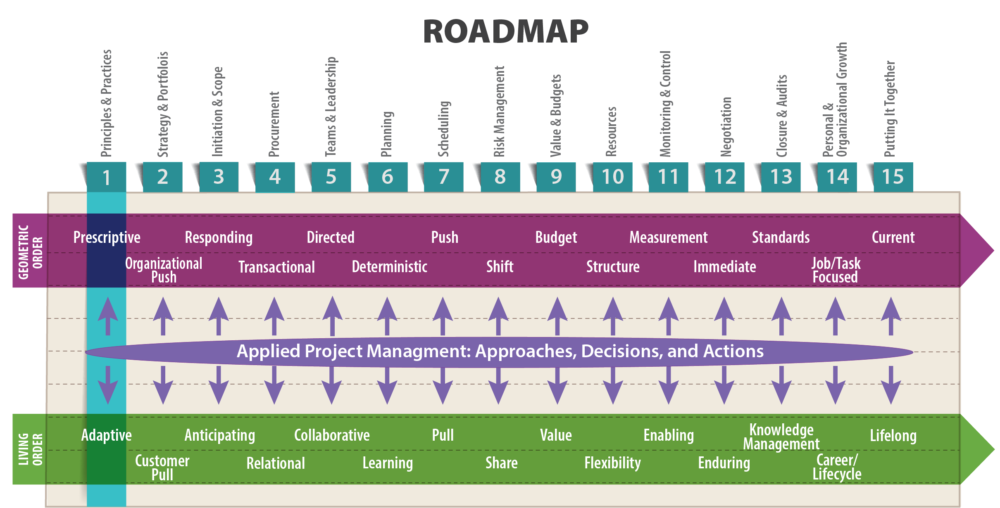
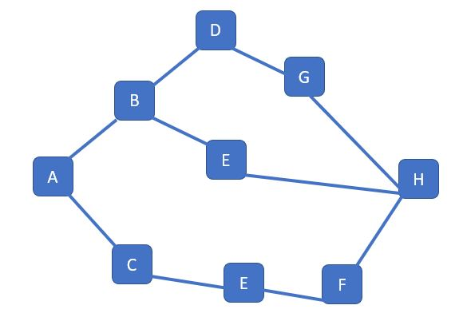
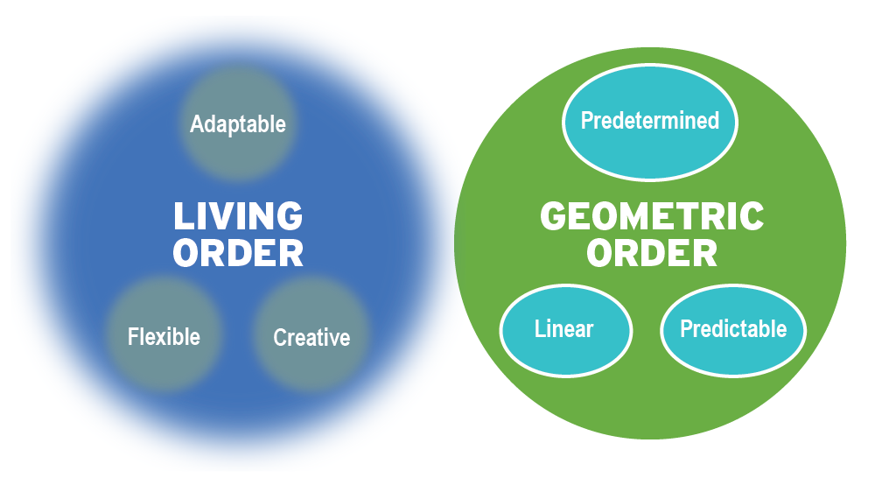
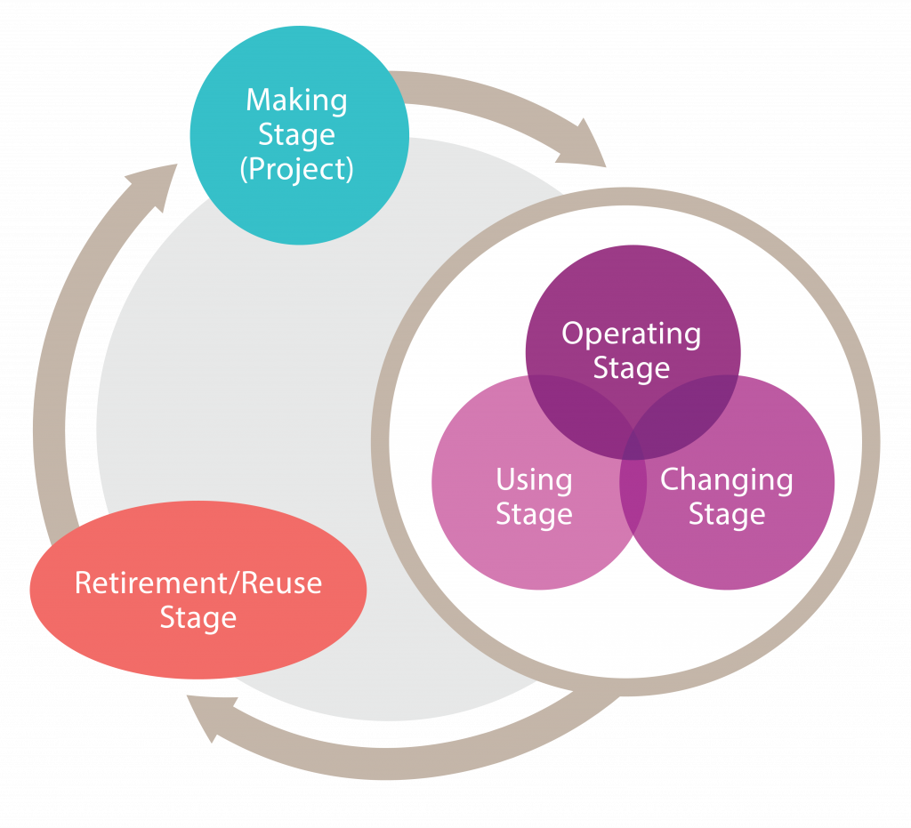
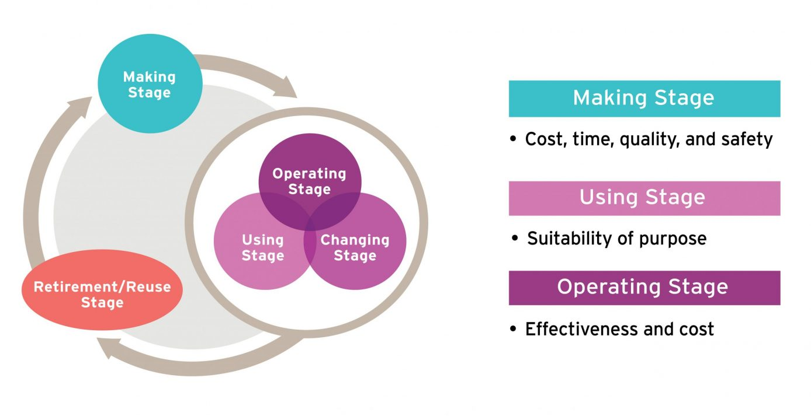
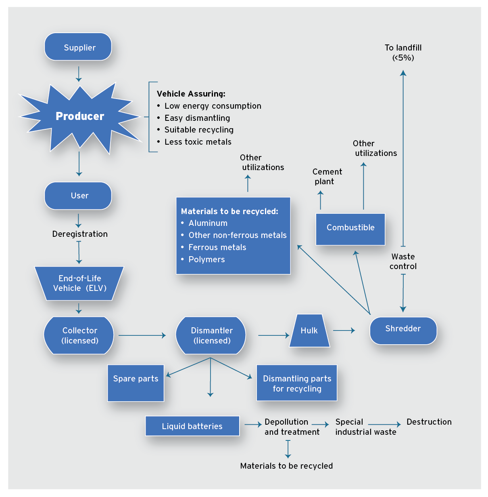

Nothing endures but change.
Heraclitus, 535 – 475 BC

Objectives
After reading this lesson, you will be able to
The Big Ideas in this Lesson
Projects are by definition ephemeral—they come and go, depending on an organization’s needs, and eventually come to a close. According to the Cambridge English Dictionary, a project is “a piece of planned work or activity that is completed over a period of time and intended to achieve a particular aim ” (2018). The fleeting nature of projects means that organizations with less than optimal project management proficiency often fail to develop systematic processes for managing them. Once a project is completed, everyone moves on, gearing up for the next, with barely a backward glance at what did and didn’t work in the old project. In other words, these organizations lack a coherent approach to project management—“the application of processes, methods, knowledge, skills, and experience to achieve the project objectives” (Association for Project Management n.d.). This lack of a systematic approach is especially problematic in technical fields, leading to an extremely high rate of failure for technical projects across many industries.
A quick web search on the success rate for technical projects offers some eye-opening facts and figures. Depending on which study you read, projects fail at rates between 20 and 80 percent. And throwing more money at the problem doesn’t help. Indeed, the higher a project’s budget, the more likely it is to fail (Mieritz 2012). One study found that IT projects with budgets over $15 million are project management fiascos: “On average, large IT projects run 45 percent over budget and 7 percent over time” (Bloch, Blumberg and Laartz 2012). The verdict is even more sobering for industrial megaprojects—that is for industrial projects costing over $1 billion. According to Edward W. Merrow, “The oil and gas production sector fares the worst; 78 percent of megaprojects in this industrial sector are classified as failures” (2011, 49).
How can organizations find their way out of this morass? By creating a culture of systematic, professional project management that values the skills discussed throughout this book. Research consistently shows that organizations that implement technical project management techniques and processes reap a rich reward in project successes. This book focuses on developing an approach to technical project management that is flexible, adaptable, and open to new learning. It provides many practical suggestions but does not go into specific methods in detail. For guidance on the nuts and bolts of project management see Project Management: The Managerial Process, by Erik W. Larson and Clifford Gray.
Every project unfolds in unique and changing contexts impacted by internal and external forces. One such force, culture, can have a profound effect on a project’s context and its outcome. You are likely familiar with the concept of culture, which is the set of norms, beliefs, and customs of a particular society, group, place, or time. Culture functions on many levels in human society—in geographical regions, ethnic groups, religions, families, organizations, and even projects.
Projects that use the same tools, contracts, and structures may have starkly different outcomes depending on the culture of the organization and the project team. Organizational culture comprises the set of behaviors, values, artifacts, reward systems, and rituals that make up an organization. The culture of an organization may manifest itself in an expected set of behaviors (e.g., how do people work with customers and each other, how early or late do people work), the structure of the organization’s reward system (e.g., are employees rewarded for cost-cutting, customer satisfaction, innovation, or other factors), its approach to risk, and its overall mission and strategy (Bersin 2015). Project culture, or the set of beliefs, attitudes, and behaviors that exist independently of the individuals working on the project, can be a powerful force, with the result that people joining a project often adapt to the existing culture rather than changing it. At every level, culture is driven by leadership (2015).
The notion of a cultural iceberg serves as a reminder that many aspects of culture are not apparent to outsiders. In an organization or project team, the surface culture—made up of articulated norms, acceptable practices, and strategies—often represents a small fraction of the overall culture. Many more aspects of culture lie beneath the surface, often exerting a much stronger influence on how team members work together. These deep culture elements include communication styles and rules, notions of leadership, concepts of self and time, attitudes toward authority and collaboration, and approaches to decision-making and problem-solving, among others.
Cues to deep elements of organizational and project culture can often be found in unexpected places. Procurement practices, for instance, divulge a lot about culture. If the approach to procurement is price driven, it’s likely that the organizational and project culture is transactional, and possibly adversarial. If, on the other hand, procurement is value driven, the culture is more likely to be relational.
Project leaders should reflect on all facets of organizational and project culture, including the ways in which surface elements are not in alignment with substantive elements of the deep culture. Vera Martinovich, an engineering manager at Boeing, also emphasizes the importance of recognizing when culture—either at the project or organization level—is becoming an obstacle to successfully delivering a quality project outcome. According to Martinovich, that might mean helping the project team successfully work within the existing organizational culture rather than fighting it (pers. comm., June 20, 2020).
Additional challenges related to culture can arise on project teams comprising people from multiple organizations—a common occurrence in many industries. Examples of such teams include a product development team that utilizes supplier designs, a construction project team that includes independent designers and contractors, and a software project team working with an outside consultant to implement purchased products. With such teams, no common organizational culture is guaranteed. In these cases, the project leader has the opportunity to set the tone for the unique project culture, which should align with that of the ultimate customer.
No matter the makeup of the team or the impact of outside forces, the role of the project leader is to build a project culture that encourages team members and other stakeholders to work toward a shared goal. Accomplishing that requires the project leader to recognize their own influence, including ways in which they may be negatively impacting the project culture. For instance, a project leader who passively befriends everyone at the expense of making hard decisions and holding the team accountable may prove to be a team’s biggest obstacle. Likewise, autocratic project managers who act on behalf of the team without soliciting input or those that deliberately withhold information as a source of power can corrupt the project culture and dramatically lower the probability of successful outcomes.
A culture of trust and flexibility on a project team can mean the difference between success and failure. By fostering a collaborative culture, the project leader strengthens the team’s ability to deliver quality and to fix problems when they occur.
Mastering, influencing, and changing a project’s culture takes time and patience. While you are discerning the culture you are working in, be open-minded—listen, adapt, and be patient. Gauge carefully when deciding what aspects of the culture you try to shape. Start with an awareness of a project’s culture, assimilating and adjusting your way of doing things when you can.
In his book Mastering the Leadership Role in Project Management: Practices that Deliver Remarkable Results, Alexander Laufer explains two essential qualities of a project manager, drawing on the hedgehog and the fox metaphor made famous by the philosopher Isaiah Berlin:
The fox is a cunning and creative creature, able to devise a myriad of complex strategies for sneak attacks upon the hedgehog. The hedgehog is a painfully slow creature with a very simple daily agenda: searching for food and maintaining his home. Every day the fox waits for the hedgehog while planning to attack him. When the hedgehog senses the danger, he reacts in the same simple, but powerful, way every day: he rolls up into a perfect little ball with a sphere of sharp spikes pointing outward in all directions. Then the fox retreats while starting to plan his new line of attack for the next day. (Laufer 2012, 220)
The advantage of the fox is that his complex understanding of the world allows him to try out many possibilities, adapting strategies and tactics in response to the current situation. Hedgehogs have one grand strategy that allows them to simplify all experience into “a single overall concept that unifies and guides everything they do.” As you will see in Lesson 2, where we discuss organizational strategy, the hedgehog approach is preferable when it comes to making long-term decisions about an organization’s future. But when it comes to project management, both strategies are powerful, and both can be effective, depending on your situation. Laufer argues that successful managers “behave both like hedgehogs and foxes, though they place the hedgehog in the driver’s seat.”
Throughout this course, we will take a foxlike approach to technical project management by keeping an open mind and exploring the many lines of attack available in a particular project. But we will also place a hedgehog-like emphasis on a few basic principles—in particular the basic principles of Lean project management. At the same time, all our discussions will be informed by the distinction between the two fundamental approaches to project management: the traditional, predictive geometric-order approach, and the more adaptable, living-order approach.
In his 1907 book Creative Evolution, the French philosopher Henri Bergson investigated the nature of human creativity and its relation to order. According to Bergson, by “order” we generally mean a mechanistic, predetermined, linear relationship between things. Event A leads to Event B; Event B leads to Event C; Event C leads to Event D; and so on, with no possibility of variation or adaptation. We also tend to consider creativity as something that arises only in a state of disorder—that is, when no type of order is evident. The free-thinking artist is a stereotype founded in this way of thinking. But Bergson argued that the disorder we associate with creativity is really just a different type of order (222-224).
Again, we turn to Alexander Laufer, who has drawn some powerful insights on project management from Bergson’s work, which he summarizes as follows:
Bergson claimed that there is no such thing as disorder, but rather two sorts of order: geometric and living order. While in ”geometric order” Bergson related to the traditional concept of order, in ”living order” he referred to phenomena such as the creativity of an individual, a work of art, or the mess in my office. (2012, 214)
Throughout this book we will examine and compare geometric order to living order, with a goal of developing a creative, realistic, functional approach to project management.
In project management, geometric order aligns with traditional managerial thinking. This concept of order is associated with predictable relationships between the stages of development, such as the relationships shown in Figure 1-1, with one stage necessarily leading to the next.

Project managers have traditionally idealized such an orderly project progression. Indeed, it is the driving force behind the predictive, process-oriented approach to project management that organizations such as the Project Management Institute have tended to focus on. It is an essential component of project management, and inexperienced project managers should start by mastering a geometric approach to their work. However, when relied on exclusively, geometric order thinking can lead to inefficient and ineffective results.
By contrast, living order thinking recognizes that a system of things is always in the process of remaking itself, and that a system is always—at some level—in a state of uncertainty. In project management, this suggests that projects happen in dynamic environments, and that unexpected events should be considered part of a complex project’s life cycle. This is something that experienced project managers learn over time. But even inexperienced project managers can try to incorporate an understanding of living order into their work.
Figure 1-2 illustrates the characteristics of living and geometric order. Keep in mind that a project can have qualities of both.

You might be called on to use geometric order methods in one situation and living order methods in another. For example, preparing a weather forecast on a typical day in San Diego, where the weather varies little from day to day, is a geometric order task. By contrast, preparing a weather forecast for the coast of Florida with a hurricane expected to hit shore five days in the future is a living order project. Often the planning stage occurs in living order. Then, as you begin to learn more about the project and what to expect, execution proceeds in geometric order. But when something unexpected happens, you could suddenly be plunged back into living order. You have to be prepared to move back and forth among geometric and living order techniques, adapting to the situation as necessary.
Traditional project management processes were founded on the presumption that a project can be planned down to the smallest detail, and that after the planning phase is complete, the project manager’s job is to execute the project according to that plan, without surprises. The reality of the modern world is quite different. In his 1991 book, Managing as a Performing Art: New Ideas for a World of Chaotic Change Permanent, Peter Vaill argued that today’s organizations actually operate in a state of “permanent white water.” Alexander Laufer describes Vaill’s argument as follows:
In using the “permanent white water” metaphor, Vaill calls our attention to the fact that the external environment of contemporary projects is full of surprises, tends to produce novel problems, and is “messy” and ill-structured. (2012, 214)
Throughout this book, we will focus on ways to manage technical projects in a permanent white-water world.
Anything that involves human beings doing anything over a period of time, with limited resources, involves a certain amount of unpredictability. This means that projects are inevitably shaped by living order. You might think that you have a good handle on what to expect from your co-workers and project stakeholders throughout the course of a project, but often the traits you might consider the most predictable turn out to be completely unreliable.
Not long ago, this realization shook up the field of economics, which was founded on the assumption that humans were totally predictable in their tendency to make choices that enhance their financial well-being. In his groundbreaking work in the field of behavioral economics, Richard H. Thaler demonstrated that the supposedly irrefutable idea that people act rationally in their own self-interest is debatable at best, and probably untrue (Knee 2015). And yet many economists consistently refuse to take the unreliability of their basic precept into account. According to Thaler, “Economists discount any factors that would not influence the thinking of a rational person. These things are supposedly irrelevant. But unfortunately for the theory, many supposedly irrelevant factors do matter” (2015).
Thaler goes onto argue that “unless you are Spock,” supposedly irrelevant things, such as how you feel about saving for retirement, can have far more profound effects on your economic behavior than mere self-interest (2015). Successful project managers succeed, in part, because they never ignore the power of supposedly irrelevant things to affect project outcomes. Since we can safely assume that the vast majority of your future teammates will not be Vulcans, you should probably also assume that supposedly irrelevant things will end up having unforeseen effects on the projects you manage. You never know what living order will throw your way as a project unfolds.
That’s not to say that, as a project manager, you can dispense with the expectations of geometric order. Quite the contrary. Because this is a book on technical project management, our thinking will necessarily be concerned with geometric order. After all, technical projects involve technical products and services whose performance is governed by predictable laws. Gravity always works the same way, so engineers have to take that into account. The latest computer processors can only work so fast in today’s environment, and so software developers have to take that into account, too.
However, you need to guard against the tendency to think that because technical products and services are themselves predictable, the projects required to produce them will be equally predictable. That is simply not the case. Because this is a book on management, an endeavor that involves people performing tasks over time, our thinking will be deeply rooted in living order.
When you open your eyes to the ever-changing nature of living order, you can begin to appreciate the potential for change inherent throughout a project’s life cycle. The same is true for the result of a project—whether that’s a building, a new smartphone, or software for farm machinery. The product, or result, of a project is created, maintained, adapted, updated, and demolished/retired by various projects during its life. Each of these projects is subject to living-order uncertainty, magnifying the difficulty of predicting what the result of a project will look like in the future, and whether it will indeed turn out to be suitable for its intended purpose. This, in turn, complicates the planning phase for any project, particularly for things that are ultimately judged by how easily it can be dismantled and disposed of, or recycled and reused.
For example, Figure 1-3 shows the life cycle of a building. The first stage, the making stage, is the domain of the project manager who oversees the building’s construction. Once the building is complete, the project manager moves on to other work, but the building of course has just begun its functional life. During the operating/using/changing stages, the building’s occupants either benefit or suffer from the project manager’s decisions throughout the making stage. Next comes the retirement/reuse stage, in which the building will likely be demolished and something else built in its place. At that point, the entire life cycle starts again. The ease with which these stages unfold depend, at least in part, on choices made by the project manager during the making stage. Only by understanding these later stages can you properly understand the true nature of a project and make decisions that will ensure it produces something of enduring value.

In software development, the time periods between stages are shorter than in construction. As in construction, the operating stage is by far the costliest part of the life cycle process. However, when a software product continues to be used beyond its designed operational life, the operating costs can rise at accelerating rates. In any industry, thinking about the life cycle of the result of a project changes how you think about project metrics. As shown in Figure 1-4 , what seems like a good choice from within the limited confines of the making stage might seem foolish when viewed from the broader perspective of the full life cycle.

In its narrowest sense, the term project outcome refers to a project’s measurable output in terms of scope, cost, schedule, quality, and other issues such as safety. In a broader sense, the term also refers to the impact a project has compared to its larger goals. In this sense, we take the community perspective, taking into account, for instance, a project’s multiple use potential and eventual redevelopment. For example, in the narrowest sense, the desired project outcome of a proposed sports arena might be a multi-use indoor facility built according to the planned scope, cost, schedule, and so on. However, in the broader sense, the desired project outcome might be redevelopment and revitalization of the surrounding area.
The term project success refers to the degree to which a project is done well, with stakeholders having varying definitions of success over time, depending on their perspectives. In other words, the evaluation of a project’s success is a subjective judgment; different stakeholders will have different initial ideas about a project’s overall success based on their own expectations and objectives. To make things more complicated, over time, stakeholders will likely revise their ideas on the project’s success to take into account new information about how the project outcome actually functions in the real world. The changing definition of project success is especially important to keep in mind throughout disruptive projects such as home remodels and road reconstructions. For example, commuters might have an extremely low opinion of an interchange construction when they are suffering through the frustrations of traffic backups and detours. Later, when the interchange is complete, and traffic is flowing more quickly than ever before, they are likely to rate the project’s overall success very high. In the consumer products world, customers looking for a new wireless device might base their idea of project success on ease of use and reliability, whereas the company producing the device might rate project success based on number of units sold. Meanwhile, the industry as a whole might only rate the project a success if it sets a new technical standard.
If you limit your perspective to the making stage, it’s easy to think that the terms “project outcome” and “project success” are synonymous. For example, suppose you’re hired to build an energy efficient house according to Leadership in Energy & Environmental Design (LEED) standards. If, at the end of the making stage, you see that your team completed the structure on time and on budget, with all the specified LEED features, then you would probably consider that outcome a success. But as the house enters the Operating/Using/Changing stage, information about the home’s energy use might change your ideas about the success or failure of the project. If in fact the LEED features do not function as expected, then you would probably rate the project’s overall success rather low. Perhaps more importantly, the home’s owner would be unlikely to consider the home a success. And depending on the longevity estimates and ever-changing external factors, the lifespan of the house might also be significantly different than originally projected.
Put simply, project success is defined by doing the project well and meeting defined objectives. Project outcome also encompasses whether you and your team did the right thing. It’s important to consider both at multiple levels—for individual tasks, for the overall project, and for the impact of the project over its life. In every case, we need to think broadly about the factors contributing to a project’s success or failure. We risk losing enduring value if we draw too tight a fence around the boundaries we consider when planning and assessing project success.
The ideal project manager has empathy for the people who will be using and modifying the completed project in the future, even the people who will ultimately demolish or recycle it. Ideally, this means incorporating materials that can ultimately be recycled. Indeed, in the European Union, automobile manufacturers are required by law to reduce the non-recyclable waste generated by an end-of-life vehicle (ELV) to 5%. This way of thinking necessitates a more complicated view of a product’s life cycle, as shown in Figure 1-5 (Kanari, Pineau and Shallari 2003).

Sustainability efforts inspired by a recognition of the realities of living order are well underway in the construction industry. As Lance Hosey, a Washington architect, has argued, sustainable construction means, among other things, creating buildings that can be easily disassembled, minimizing the disruption and contamination inherent in the demolition process (2005). Software developers, too, can develop sustainable software by, for example, writing code that runs even on outdated hardware, thereby minimizing the amount of computer equipment that ends up in landfills (Green Wiki 2015).
In addition to being sustainably designed, software also has the potential to promote other sustainability efforts, as discussed in the report Software Accelerates Sustainable Development, published by the nonprofit organization Business for Social Responsibility (2008). David Pagenkopf, director of Application Development and Integration at UW-Madison, has this to say about sustainability and software design:
The use of virtualization techniques has largely eliminated hardware as a material factor in software design. The most important issue in software sustainability is selecting the software languages, tools, and design architecture that ensure that software is maintainable for as many years as possible. One of the best examples is writing software that works entirely in a web browser, which can then work across multiple platforms. Even better is writing software using responsive design that automatically adjusts to the user’s end device (e.g. mobile phone, tablet, or laptop/desktop) to present the best possible interface to the user. (pers. comm., August 25, 2015)
Consumer products are subject to an ever-increasing array of sustainability expectations. As Bryan Burrough wrote in the New York Times, Wal-Mart reduced “packaging size across its producing lines, saving the company an estimated $3.4 billion a year…while reducing trash“ (Burrough 2011). Over a decade of effort has resulted in sustainability initiatives that “are having a real impact today. The company has strategically used its scale to its advantage to enact change within as well as outside the organization” (Atamian 2017).
So what does all this talk about change and unpredictability mean, practically speaking, for a real-life project manager? Throughout this book, we will be investigating ways to accommodate the realities of living order in the daily tasks associated with technical project management. For example, in Lesson 6, we’ll talk about pull planning, an adaptive, recursive form of planning that prioritizes regular updating to reflect current conditions. But for now, let’s talk about some general principles for successful project management in a living order world.
In an article for MIT Sloan Management Review, Alexander Laufer, Edward Hoffman, Jeffrey Russell, and Scott Cameron show how successful project managers combine traditional management methods with newer, more flexible approaches to achieve better outcomes (2015). Their research shows that successful project managers adopt these four vital roles:
Adopting these four roles will set you on the road toward delivering more value in your projects, with less waste, which is also the goal of both Lean project management and Agile project management.
Predictive, geometric order project management is often inefficient, leading to wasted time, money, resources, and labor. By contrast, Lean is a business model and project management philosophy that offers a means to streamline projects while allowing for the flexibility required to deal with unexpected events. Based on ideas and practices developed at Toyota after World War II, it emphasizes creating value for the customer while eliminating waste through the efficient flow of work from one phase of a project to another.
More than anything, Lean is a way of thinking. In their essential book on the topic, James P. Womack and Daniel T. Jones describe Lean thinking as follows:
It provides a way to specify value, line up value-creating actions in the best sequence, conduct these activities without interruption whenever someone requests them, and perform them more and more effectively. In short, Lean thinking is Lean because it provides a way to do more and more with less and less—less human effort, less equipment, less time, and less space—while coming closer and closer to providing customers with exactly what they want. (2003, 15)
We’ll be discussing Lean extensively throughout this book. To get started here, we’ll focus on two fundamental Lean ideas: value and waste.
In ordinary conversation, “value” is a generic term that refers to the overall worth or usefulness of something. But in Lean, value is only meaningful “when expressed in terms of a specific product (a good or a service, and often both at once) which meets the customer’s needs at a specific price at a specific time” (Womack and Jones, 16). In other words, value is defined by the customer, not by the manufacturer, the contractor, or the service provider—and definitely not by the engineer responsible for designing the product.
This sounds simple, but it can be a difficult concept for engineers, with all their technical expertise, to embrace. In their book, Womack and Jones include a chapter on Porsche, which suffered a sales collapse in the mid 1980’s largely because its world-class engineers had blinded themselves to their customers’ definition of value:
Designs with more complexity produced with ever more complex machinery were asserted to be just what the customer wanted and just what the production process needed…. It often became apparent that the strong technical functions and highly trained technical experts leading German firms obtained their sense of worth—their conviction that they were doing a first-rate job—by pushing ahead with refinements and complexities that were of little interest to anyone but the experts themselves…. Doubts about proposed products were often countered with claims that “the customer will want it once we explain it,” while recent product failures were often explained away as instances where “the customers weren’t sophisticated enough to grasp the merits of the product.” (2003, 17)
This is only one example of the kinds of preconceptions that can distort a company’s understanding of the value it is supposedly producing for the benefit of the customer. Womack and Jones provide in-depth case studies detailing the forces that can prevent a company from understanding what its customers actually want:
The definition of value is skewed everywhere by the power of preexisting organizations, technologies, and undepreciated assets, along with outdated thinking about economies of scale. Managers around the world tend to say, “This product is what we know how to produce using assets we’ve already bought, so if customers don’t respond we’ll adjust the price or add bells and whistles.” What they should be doing instead is fundamentally rethinking value from the perspective of the customer. (2003, 17-18)
To make the leap into Lean thinking, you need to fully grasp the nature of value, which is why we will return to this idea throughout this book. You also need to understand its opposite—waste. The whole goal of Lean is to maximize value and eliminate waste.
According to the Lean Lexicon, waste[1] is “Any activity that consumes resources but creates no value for the customer” (Lean Enterprise Institute 2014). Identifying waste can be as difficult for new Lean thinkers as identifying value.
Taiichi Ohno, the Toyota executive who pioneered the focus on waste and value that we now call Lean, identified seven forms of waste. You can find countless explanations of the seven wastes in books and articles. The following is adapted from “7 Wastes”- Lean Manufacturing Tools:
Another way to think about waste is to focus on how easily it can be eliminated. When looked at that way, it falls into two types:
In project management, an example of type one waste might be an audit necessary to measure the performance of contracted work or a promised product against an agreed-upon set of requirements. From the customer’s perspective, such an audit adds no value, but it is necessary to ensure the successful completion of the project. A type two waste often seen in project management is constant requests for status updates. New project managers who haven’t yet built trust with their team sometimes succumb to this form of waste as they try to micro-manage all tasks. Regularly scheduled updates and escalation expectations for unexpected challenges helps to eliminate this type two waste in project management.
The six principles at the heart of Lean thinking are: specify value, identify the value stream, flow, pull, perfection, and respect for people. You’ll learn more about these ideas, and how they relate to technical project management, throughout this book. We’ll explain them briefly here, to give you a foundation to work from. Most of the examples in this lesson are drawn from manufacturing, where Lean got its start. But keep in mind that Lean thinking has been widely adopted in industries as diverse as construction and healthcare.
By contrast, a pull system builds products and uses up materials based on actual customer demand, the way a sandwich shop might make your favorite turkey and guacamole sandwich after you order it. In reality, most systems use a combination of pull and push production. For example, making up your sandwich on the spot is a pull activity, but the store would probably have practiced push production by previously ordering turkey and guacamole according to forecasts of customer demand.
These examples greatly simplify the Lean concept of pull. In practice, especially in giant factories or on construction sites, it is far more complex. But the basic, waste-reducing principle is always the same: “no one upstream should produce a good or service until the customer downstream asks for it” (Womack and Jones 2003, 67).
Translating the concept of pull to project management can be difficult but yields powerful results. The team starts with the end-point—the ultimate goal of the project—and pulls activities forward, describing what must be done each step of the way. This differs greatly from standard project management, which starts from the beginning, building a schedule that assumes previous tasks are completely finished before the team starts on the next tasks. By contrast, in a Lean schedule, more tasks overlap. Kanban is an adaptive project management methodology based on Lean concepts, including pull. We’ll discuss Kanban in more detail later in this lesson.
In a presentation on project planning for a transmission line design, Kristine Engel explains that, in a pull schedule, “the ‘later tasks’ may start before ‘earlier’ tasks end,” and that some “design refinement tasks may overlap with the labor bid process or even construction, which reflects the reality of utility projects.” Despite this fluidity, the team is able to track progress by comparing billed hours to the budget. The whole system is built on “regular communication with the client to revise short-term goals in relation to the full project timeline” (Engel 2017).
This two-minute video explains the difference between push and pull production:
Lean was originally developed in the world of manufacturing but has been adopted in many industries. In the world of software development, a related approach, Agile, has become increasingly popular. Agile software development projects typically involve small, self-organizing teams who work collaboratively in short iterative cycles to produce working product increments. When you hear people talking about Agile, they may be referring generally to a set of values and principles intended to guide project teams in “achieving agility” by continuously adapting and improving the way they work. However, people often use the term Agile to refer to one of the many specific software development frameworks based on those values and principles, including the following.
The many flavors of Agile include:
Most Agile approaches emphasize an iterative approach to product development, with the project specifications evolving along with the customer’s notion of the software requirements. According to project manager Steve Caseley, in a Microsoft Growth Center article, projects using these iterative development approaches “plan, develop, and implement project functionality in small chunks (or iterations). The key to successful iterative delivery is that each small chunk effectively operates as a smaller mini-project under the umbrella of the total project” (Caseley 2019).
A Scrum project starts with a conversation between the development team and the product owner about what the customer wants the software to do. In Scrum terminology, the customer is the product owner, and the features that the product owner wants included in the software are known as user stories, which may be expressed in simple, nontechnical language from the perspective of the person who wants that feature—for example, “As a car owner, I want to schedule my service appointment online so that I don’t have to spend time on the phone calling my mechanic.” Often, the person is a fictional persona representing a type of user or stakeholder.
The product owner prioritizes the user stories, which are collectively referred to as the product backlog, and in each development cycle, the team creates pieces of software that address one or more user stories. After a one- to two-week cycle of development (known in Scrum as a sprint) the team presents the new software to the product owner in a sprint review meeting so she can try it out and make suggestions for improvement. The team then begins another sprint, incorporating those suggestions into a new iteration and beginning work on new user stories, depending on their capacity. After every sprint, the product owner has the chance to redirect the team to new user stories, or to revise the team’s understanding of an existing user story. Through these repeated interactions, which provide fast, focused feedback, the team and the product owner zero in on a software application that does what the product owner needs it to do. If time and money are tight, as they often are, the product owner has regular opportunities to make choices about which user stories are the most important, and which can be dispensed with if necessary.
Agile development is essentially a learning process through which the development team and the product owner create a shared understanding of how many features they can create, given the allotted time and money. It’s very much a living order approach to project management, in that the early stages involve some ambiguity and many unknowns. According to Robert Merrill, a Senior Business Analyst at the University of Wisconsin-Madison, and an Agile coach, “Agile is a way to manage projects in the face of unpredictability and constraints—often very rigid time and budget constraints. The fast feedback allows the team to create the best possible software within the given constraints” (2017).
Some companies use a combination of Agile frameworks (often called hybrid Agile) or a combination of some predictive, plan-driven processes with elements of an Agile framework (also called a hybrid development approach). A hybrid Agile project might include classic Scrum elements such as a product owner and development sprints as well as a Kanban board that is used to pull work based on capacity. A hybrid development approach could involve predictive project planning along with more flexible Agile development cycles. Decisions about which approach to use—whether it is a strictly Agile approach, such as Scrum, or a hybrid approach—should be based on the needs of the project as well as the organizational environment in which the project will unfold.
Paul Dandurdan, CEO of PieMatrix, a company whose products include a visual project management software platform, argues that there is value in both Agile and predictive, or waterfall, approaches. He propose a hybrid Agile/waterfall manifesto in a blog post that also highlights what he sees as the limitations of the original Agile Manifesto: “Hybrid Agile Manifesto and Spider Man.”
Like Lean, Agile will be a recurring topic throughout this book. To get started learning about Agile on your own, see the following:
In his fascinating lecture “Real Software Engineering,” Glenn Vanderburg presents the history of software engineering (2011). He explains how early software developers tended to think of software engineering in terms that were familiar to them from structural engineering, because that’s what they thought the term engineering meant. Vanderburg advocates a new, simple definition of engineering: whatever works.
History tells us that what used to be called software engineering actually had little to do with engineering, because so-called “software engineering projects” were riddled with waste, rework, and failure. In other words, it didn’t work. According Vanderburg, Agile is the only real form of software engineering. It is fundamentally different from structural engineering, in part because it allows for instantaneous, essentially-free testing—something that is impossible when building planes or bridges. Also, whereas other types of engineering typically involve modeling something over a long period of weeks or months, and then getting feedback, also over weeks or months, Agile developers receive feedback over different time scales. For individual blocks of code, developers can get important feedback in minutes or hours by simply sharing it with another developer or with the customer. For larger parts of the project, such as acceptance testing or a release of new features, getting feedback is more expensive and takes place over weeks or months.
The main reason feedback and testing in Agile software development differs so much from other types of engineering is that the source code is itself the model. By writing code, Agile developers create both the testable model and the final product at the same time. In Vanderburg’s words: “Agile processes are economical, cost-tuned feedback engines.”
Association for Project Management. n.d. “What is project management?” apm.org. Accessed June 15, 2018. https://www.apm.org.uk/resources/what-is-project-management/.
Atamian, Luna. 2017. “Why is Walmart a sustainability leader?” Huffington Post, December 14. https://www.huffingtonpost.com/entry/why-is-walmart-a-sustainability-leader_us_5a329da5e4b00caf3d59eae8.
Bergson, Henri. 1911. “Creative Evolution.” Project Gutenberg. Accessed June 15, 2018. http://www.gutenberg.org/files/26163/26163-h/26163-h.htm.
Bersin, Josh. 2015. “Culture: Why It’s the Hottest Topic in Business Today.” Forbes. March 13. https://www.forbes.com/sites/joshbersin/2015/03/13/culture-why-its-the-hottest-topic-in-business-today/#27b6f20f627f.
Bloch, Michael, Sven Blumberg, and Jürgen Laartz. 2012. “Delivering Large-Scale IT Projects on Time, on Budget and on Value.” McKinsey&Company. October. Accessed August 4, 2016. http://www.mckinsey.com/business-functions/business-technology/our-insights/delivering-large-scale-it-projects-on-time-on-budget-and-on-value.
Burrough, Bryan. 2011. “Behind the Greening of Wal-Mart.” New York Times, May 14. http://www.nytimes.com/2011/05/15/business/15shelf.html?_r=0.
Business for Social Responsibility. 2008. “Software Accellerates Sustainable Development.” bsr.org. http://www.bsr.org/reports/BSR_Software_Accelerates_Sustainable_Development.pdf.
Cambridge English Dictionary. 2018. “project.” Cambridge Dictionary. Accessed May 12, 2018. https://dictionary.cambridge.org/us/dictionary/english/project.
Caseley, Steve. 2019. “Project Management: Traditional, Iterative, or Hybrid?” Microsoft: The Growth Center. June 20. https://www.microsoft.com/en-us/microsoft-365/growth-center/resources/adopting-the-best-project-management-process-for-your-business.
Engel, Kristine. 2017. “Project Planning for Transmission Line Design.” PowerPoint presentation for class in Technical Project Management, University of Wisconsin-Madison, October 12.
Graban, Mark. 2014. “#Lean: Clarifying Push, Pull, and Flow in a Hospital; the Patient “Pulls”.” Mark Graban’s Lean Blog. February 24. https://www.leanblog.org/2014/02/flow-push-and-pull-in-a-hospital/.
Green Wiki. 2015. “Sustainable Code Development.” Green Wiki. June 9. http://green.wikia.com/wiki/Sustainable_code_development.
Hosey, Lance. 2005. “More Constructive Ways to Build a City.” The Washington Post, January 9. http://www.washingtonpost.com/wp-dyn/articles/A57855-2005Jan7.html.
Kanari, N., J.L. Pineau, and S. Shallari. 2003. “End-of-Life Vehicle Recycling in the European Union.” Journal of the Minerals, Metals & Materials Society, August. Accessed June 9, 2015. http://www.tms.org/pubs/journals/jom/0308/kanari-0308.html.
Knee, Jonathan A. 2015. “In ‘Misbehaving,’ an Economics Professor Isn’t Afraid to Attack His Own.” New York Times, May 5. http://www.nytimes.com/2015/05/06/business/dealbook/book-review-misbehaving-by-richard-thaler.html?_r=1.
Larson, Erik W., and Clifford F. Gray. 2011. Project Management: The Managerial Process, Sixth Edition. New York: McGraw-Hill Education.Laufer, Alexander. 2012. Mastering the Leadership Role in Project Management: Practices that Deliver Remarkable Results. Upper Saddle River: FT Press.
Laufer, Alexander, Edward J. Hoffman, Jeffrey S. Russell, and Scott W. Cameron. 2015. “What Successful Project Managers Do.” MIT Sloan Management Review, Spring: 43-51. http://sloanreview.mit.edu/article/what-successful-project-managers-do/.
Lean Enterprise Institute. 2014. Lean Lexicon, Fifth Edition. Edited by Chet Marchwinski. Cambridge, MA: Lean Enterprise Institute.
Lean Manufacturing Tools. n.d. “Waste of Defects; causes, symptoms, examples and solutions.” Lean Manufacturing Tools. Accessed November 11, 2017. http://leanmanufacturingtools.org/129/waste-of-defects-causes-symptoms-examples-and-solutions/.
—. n.d. “Waste of Overproduction; causes, symptoms, examples and solutions.” Lean Manufacturing Tools. Accessed November 11, 2017. http://leanmanufacturingtools.org/114/waste-of-overproduction-causes-symptoms-examples-and-solutions/.
Merrill, Robert, interview by Ann Shaffer. 2017. Senior Business Analyst, University of Wisconsin-Madison (October 2).
Merrow, Edward W. 2011. Industrial Megaprojects: Concepts, Strategies, and Practices for Success. Hoboken, New Jersey: John Wiley & Sons, Inc.
Mieritz, Lars. 2012. “Gartner Survey Shows Why Projects Fail.” This Is What Good Looks Like. June 10. https://thisiswhatgoodlookslike.com/2012/06/10/gartner-survey-shows-why-projects-fail/.
ORC International: Expert Advisory Services. n.d. Rapid Product Development Experts. Accessed September 9, 2016. http://www.orcexperts.com/experts.asp?strSearchType=all&strQuery=rapid+product+development.
Pagenkopf, David. 2018. “Email on sustainability and software design.”
Thaler, Richard H. 2015. “Unless You Are Spock, Irrelevant things Matter in Economic Behavior.” New York Times, May 8. http://www.nytimes.com/2015/05/10/upshot/unless-you-are-spock-irrelevant-things-matter-in-economic-behavior.html?abt=0002&abg=0.
Vanderburg, Glenn. 2011. “Lone Star Ruby Conference 2010 Real Software Engineering by Glenn Vanderburg.” Published October 24, 2011. YouTube video, 51:56. https://www.youtube.com/watch?v=NP9AIUT9nos&feature=youtu.be
Womack, James P., and Daniel T. Jones. 2003. Lean Thinking: Banish Waste and Create Wealth in Your Corporation, Revised and Updated. New York: Free Press.